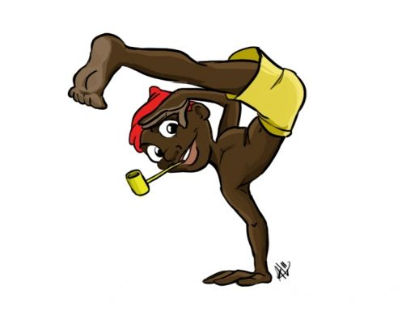

01

Saci-pererê
O Saci-pererê é um personagem do folclore brasileiro conhecido por usar um gorro vermelho e ter apenas uma perna.
Verdadeiro
Na tradição popular, ele é associado ao mato, às travessuras e ao mistério das florestas.